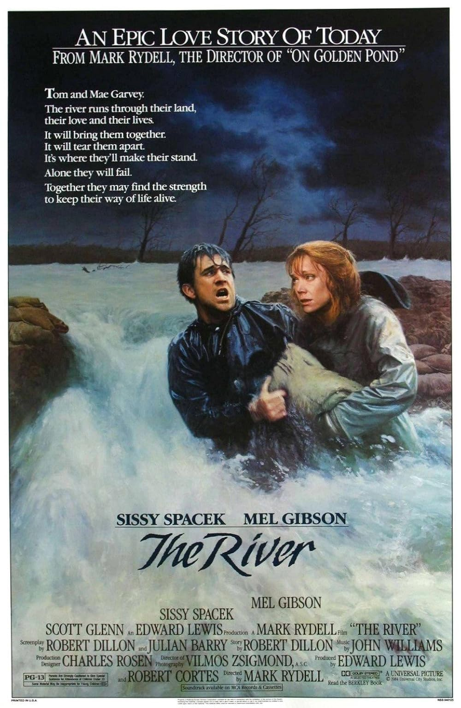

The River
57th Academy Awards
(Oscars 1985)
4 Nominations, 1 Award*
| Watched |
| Nominations | ||
|---|---|---|
| Category | Nominees | Result |
| Actress in a Leading Role | Sissy Spacek | Nominated |
| Cinematography | Vilmos Zsigmond | Nominated |
| Sound | David Ronne, Nick Alphin, Richard Portman, and Robert Thirlwell | Nominated |
| Music (Original Score) | John Williams | Nominated |
| Special Achievement Award (Sound Effects Editing) | Kay Rose | Won |